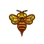
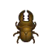

Animal Crossing Guide
Fish
| Name | Price | Location | Time | Months |
|---|---|---|---|---|
| Anchovy | 200 | Sea | 4am - 9pm | Jan, Feb, Mar, Apr, May, Jun, Jul, Aug, Sep, Oct, Nov, Dec |
Angelfish  | 3,000 | River | 4pm - 9am | Nov, Dec, Jan, Feb, Mar, Apr |
| Arapaima | 10,000 | River | 4pm - 9am | Dec, Jan, Feb, Mar |
| Arowana | 10,000 | River | 4pm - 9am | Dec, Jan, Feb, Mar |
Barred Knifejaw  | 5,000 | Sea | All Day | Sep, Oct, Nov, Dec, Jan, Feb, Mar, Apr, May |
| Barreleye | 15,000 | Sea | 9pm - 4am | Jan, Feb, Mar, Apr, May, Jun, Jul, Aug, Sep, Oct, Nov, Dec |
| Betta | 2,500 | River | 9am - 4pm | Nov, Dev, Jan, Feb, Mar |
| Bitterling | 900 | River | All Day | May, Jun, Jul, Aug, Sep |
| Black Bass | 400 | River | All Day | Jan, Feb, Mar, Apr, May, Jun, Jul, Aug, Sep, Oct, Nov, Dec |
Blowfish  | 5,000 | Sea | 9pm - 4am | May, Jun, Jul, Aug |
Blue Marlin  | 10,000 | Pier | All Day | Jan, Feb, Mar, May, Jun, Jul, Aug, Sep, Oct |
| Bluegill | 180 | River | 9am - 4pm | Jan, Feb, Mar, Apr, May, Jun, Jul, Aug, Sep, Oct, Nov, Dec |
Butterfly Fish  | 1,000 | Sea | All Day | Oct, Nov, Dec, Jan, Feb, Mar |
| Carp | 300 | Pond | All Day | Jan, Feb, Mar, Apr, May, Jun, Jul, Aug, Sep, Oct, Nov, Dec |
| Catfish | 800 | Pond | 4pm - 9am | Nov, Dec, Jan, Feb, Mar, Apr |
Char  | 3,800 | River (Clifftop) | 4pm - 9am | Mar, Apr, May, Sep, Oct, Nov, Dec |
| Cherry Salmon | 1,000 | River (Clifftop) | 4pm - 9am | Mar, Apr, May, Sep, Oct, Nov, Dec |
Clownfish  | 650 | Sea | All Day | Oct, Nov, Dec, Jan, Feb, Mar |
Coelacanth  | 15,000 | Sea (Rainy Days) | All Day | Jan, Feb, Mar, Apr, May, Jun, Jul, Aug, Sep, Oct, Nov, Dec |
Crawfish  | 200 | Pond | All Day | Oct, Nov, Dec, Jan, Feb, Mar |
Crucian Carp  | 160 | River | All Day | Jan, Feb, Mar, Apr, May, Jun, Jul, Aug, Sep, Oct, Nov, Dec |
| Dab | 300 | Sea | All Day | Aug, Sep, Oct |
Dace  | 240 | River | 4pm - 9am | Jan, Feb, Mar, Apr, May, Jun, Jul, Aug, Sep, Oct, Nov, Dec |
| Dorado | 15,000 | River | 4am - 9pm | Dec, Jan, Feb, Mar |
| Football Fish | 2,500 | Sea | 4pm - 9am | May, Jun, Jul, Aug, Sep |
| Freshwater Goby | 400 | River | 4pm - 9am | Jan, Feb, Mar, Apr, May, Jun, Jul, Aug, Sep, Oct, Nov, Dec |
| Frog | Pond | All Day | Nov, Dec, Jan, Feb | |
| Gar | 6,000 | Pond | 4pm - 9am | Dec, Jan, Feb, Mar |
Giant Snakehead  | Pond | 9am - 4pm | Dec, Jan, Feb | |
| Giant Trevally | 4,500 | Pier | All Day | Nov, Dec, Jan, Feb, Mar |
Golden Trout  | 15,000 | River (Clifftop) | 4pm - 9am | Mar, Apr, May, Sep, Oct, Nov |
Goldfish  | 1,300 | Pond | All Day | Jan, Feb, Mar, Apr, May, Jun, Jul, Aug, Sep, Oct, Nov, Dec |
| Great White Shark | 15,000 | Sea | 4pm - 9am | Dec, Jan, Feb, Mar |
Guppy  | 1,300 | River | 9am - 4pm | Oct, Nov, Jan, Feb, Mar, Apr, May |
| Hammerhead Shark | 8,000 | Sea | 4pm - 9am | Dec, Jan, Feb, Mar |
| Horse Mackerel | 150 | Sea | All Day | Jan, Feb, Mar, Apr, May, Jun, Jul, Aug, Sep, Oct, Nov, Dec |
Killifish  | 300 | Pond | All Day | Oct, Nov, Dec, Jan, Feb |
| King Salmon | 1,800 | River (Month) | All Day | Mar |
| Koi | 4,000 | Pond | 4pm - 9am | Jan, Feb, Mar, Apr, May, Jun, Jul, Aug, Sep, Oct, Nov, Dec |
| Loach | 400 | River | All Day | Sep, Oct, Nov |
Mahi-mahi  | 6,000 | Pier | All Day | Nov, Dec, Jan, Feb, Mar, Apr |
| Mitten Crab | 2,000 | River | 4pm - 9am | Mar, Apr, May |
Moray Eel  | 2,000 | Sea | All Day | Feb, Mar, Apr |
Napoleonfish  | 10,000 | Sea | 4am - 9pm | Jan, Feb |
| Neon Tetra | 500 | River | 9am - 4pm | Oct, Nov, Dec, Jan, Feb, Mar, Apr, May |
| Nibble Fish | 1,500 | River | 9am - 4pm | Nov, Dec, Jan, Feb, Mar |
| Oarfish | 9,000 | Sea | All Day | Jun, Jul, Aug, Sep, Oct, Nov |
Ocean Sunfish  | 4,000 | Sea | 4am - 9pm | Jan, Feb, Mar |
| Olive Flounder | 800 | Sea | All Day | Jan, Feb, Mar, Apr, May, Jun, Jul, Aug, Sep, Oct, Nov, Dec |
Pale Chub  | 160 | River | 9am - 4pm | Jan, Feb, Mar, Apr, May, Jun, Jul, Aug, Sep, Oct, Nov, Dec |
| Pike | 1,800 | River | All Day | Mar, Apr, May, Jun |
| Piranha | 2,500 | River | 9am - 4pm and 9pm - 4am | Dec, Jan, Feb, Mar |
Pond Smelt  | River | All Day | Jun, Jul, Aug | |
| Pop-eyed Goldfish | 1,300 | Pond | 9am - 4pm | Jan, Feb, Mar, Apr, May, Jun, Jul, Aug, Sep, Oct, Nov, Dec |
| Puffer Fish | 250 | Sea | All Day | Jan, Feb, Mar |
| Rainbowfish | 800 | River | 9am - 4pm | Nov, Dec, Jan, Feb, Mar, Apr |
Ranchu Goldfish  | 4,500 | Pond | 9am - 4pm | Jan, Feb, Mar, Apr, May, Jun, Jul, Aug, Sep, Oct, Nov, Dec |
| Ray | 3,000 | Sea | 4am - 9pm | Feb, Mar, Apr, May |
| Red Snapper | 3,000 | Sea | All Day | Jan, Feb, Mar, Apr, May, Jun, Jul, Aug, Sep, Oct, Nov, Dec |
| Ribbon Eel | 600 | Sea | All Day | Dec, Jan, Feb, Mar, Apr |
Saddled Bichir  | 4,000 | River | 9pm - 4am | Dec, Jan, Feb, Mar |
Salmon  | 700 | River (Clifftop) | All Day | Mar |
Saw Shark  | 12,000 | Sea | 4pm - 9am | Dec, Jan, Feb, Mar |
| Sea Bass | 400 | Sea | All Day | Jan, Feb, Mar, Apr, May, Jun, Jul, Aug, Sep, Oct, Nov, Dec |
| Sea Butterfly | 1,000 | Sea | All Day | Jun, Jul, Aug, Sep |
Seahorse  | 1,100 | Sea | All Day | Oct, Nov, Jan, Feb, Mar, Apr, May |
| Snapping Turtle | 5,000 | River | 9pm - 4am | Oct, Nov, Dec, Jan, Feb, Mar, Apr |
Soft-shelled Turtle  | 3,750 | River | 4pm - 9am | Feb, Mar |
Squid  | 500 | Sea | All Day | Jun, Jul, Aug, Sep, Oct, Nov, Dec, Jan, Feb |
Stringfish  | 15,000 | River (Clifftop) | 4pm - 9am | Jun, Jul, Aug, Sep |
Sturgeon  | 10,000 | River (Mouth) | All Day | Mar, Apr, May, Jun, Jul, Aug, Sep |
| Suckerfish | 1,500 | Sea | All Day | Dec, Jan, Feb, Mar |
| Surgeonfish | 1,000 | Sea | All Day | Oct, Nov, Dec, Jan, Feb, Mar |
| Sweetfish | 900 | River | All Day | Dec, Jan, Feb, Mar |
| Tadpole | 100 | Pond | All Day | Sep, Oct, Nov, Dev, Jan |
| Tilapia | 800 | River | All Day | Dec, Jan, Feb, Mar, Apr |
Tuna  | 7,000 | Pier | All Day | May, Jun, Jul, Aug, Sep, Oct |
| Whale Shark | 13,000 | Sea | All Day | Dec, Jan, Feb, Mar |
| Yellow Perch | 300 | River | All Day | Apr, May, Jun, Jul, Aug, Sep |
Zebra Turkeyfish  | 500 | Sea | All Day | Oct, Nov, Dec, Jan, Feb, Mar, Apr, May |
Bugs
| Name | Price | Location | Time | Months |
|---|---|---|---|---|
| Scorpion | 8,000 | On Ground | 7pm - 4am | Nov, Dec, Jan, Feb, Mar, Apr |
Common Butterfly  | 160 | AboveFlowers | 4am - 7pm | Mar, Apr, May, Jun, Jul, Aug, Sep, Oct, Nov, Dec |
Yellow Butterfly  | 160 | Flying | 4am - 7pm | Mar, Apr, Sep, Oct, Nov, Dec |
Tiger Butterfly  | 240 | Flying | 4am - 7pm | Sep, Oct, Nov, Dec, Jan, Feb, Mar |
| Peacock Butterfly | 2,500 | Above Purple, Black and BlueFlowers | 4am - 7pm | Sep, Oct, Nov, Dec |
| Common Bluebottle | 300 | Flying | 4am - 7pm | Oct , Nov, Dec, Jan, Feb |
Paper Kite Butterfly  | 1,000 | Flying | 8am - 7pm | Jan, Feb, Mar, Apr, May, Jun, Jul, Aug, Sep, Oct, Nov, Dec |
| Great Purple Emperor | Flying | 4am - 7am | Nov, Dec, Jan, Feb | |
| Monarch Butterfly | 140 | Flying | 4am - 5pm | Mar, Apr, May |
Emperor Butterfly  | 4,000 | Flying | 5pm - 8am | Jan,Feb,Mar,Jun,Jul,Aug,Sep,Dec |
Agrias Butterfly  | 3,000 | Flying | 8am - 5pm | Oct, Nov, Dec, Jan, Feb, Mar |
| Rajah Brooke's Birdwing | 2,500 | Above Purple, Black and BlueFlowers | 8am - 5pm | Jun,Jul,Aug,Oct,Nov,Dec,Jan,Feb,Mar |
Queen Alexandra's Birdwing  | 4,000 | Flying | 8am - 4pm | Nov, Dec, Jan, Feb, Mar, Apr |
| Moth | 130 | Around Light | 7pm - 4am | Jan, Feb, Mar, Apr, May, Jun, Jul, Aug, Sep, Oct, Nov, Dec |
Atlas Moth  | 3,000 | On Trees | 7pm - 4am | Oct, Nov, Dec, Jan, Feb, Mar |
Madagascan Sunset Moth  | 2,500 | Flying | 8am - 4pm | Oct, Nov, Dec, Jan, Feb, Mar |
| Long Locust | 200 | In Grass | 8am - 7pm | Oct, Nov, Dec, Jan, Feb, Mar, Apr, May |
| Migratory Locust | 600 | In Grass | 8am - 7pm | Feb, Mar, Apr, May |
Rice Grasshopper  | 160 | In Grass | 8am - 7pm | Feb, Mar, Apr, May |
| Grasshopper | 160 | In Grass | 8am - 5pm | Jan, Feb, Mar |
| Cricket | 130 | In Grass | 5pm - 8am | Mar, Apr, May |
| Bell Cricket | 430 | In Grass | 5pm - 8am | Mar, Apr |
| Mantis | 430 | OnFlowers | 8am - 5pm | Sep, Oct, Nov, Dec, Jan, Mar, Apr |
| Orchid Mantis | 2,400 | On Flowers | 8am - 5pm | Sep, Oct, Nov, Dec, Jan, Feb, Mar, Apr, May |
Honeybee  | 200 | AboveFlowers | 8am - 5pm | Sep, Oct, Nov, Dec, Jan |
| Wasp  | 2,500 | Shaking Trees | All Day | Jan, Feb, Mar, Apr, May, Jun, Jul, Aug, Sep, Oct, Nov, Dec |
| Brown Cicada | 250 | On Trees | 8am - 5pm | Jan, Feb |
Robust Cicada  | On Trees | 8am - 5pm | Jan, Feb | |
| Giant Cicada | On Trees | 8am - 5pm | Jan, Feb | |
Walker Cicada  | 400 | On Trees | 8am - 4pm | Feb, Mar |
Evening Cicada  | On Trees | 4am - 8am & 4pm - 7pm | Jan, Feb | |
| Cicada Shell | On Trees | All Day | Jan, Feb | |
Red Dragonfly  | 180 | Flying | 8am - 7pm | Mar, Apr |
| Darner Dragonfly | 230 | Flying | 8am - 5pm | Oct, Nov, Dec, Jan, Feb, Mar, Apr |
Banded Dragonfly  | 4,500 | Flying | 8am - 5pm | Nov, Dec, Jan, Feb, Mar, Apr |
| Damselfly | 500 | Flying | All Day | May, Jun, Jul, Aug |
Firefly  | 300 | Above Freshwater | 7pm - 4pm | Dec |
Mole cricket  | 500 | Underground | All Day | May, Jun, Jul, Aug, Sep, Oct, Nov |
| Pondskater | 130 | In Rivers | 8am - 7pm | Nov, Dec, Jan, Feb, Mar |
Diving Beetle  | 800 | In Rivers | 8am - 7pm | Nov, Dec, Jan, Feb, Mar |
Giant Water Bug  | 2,000 | On Ponds and Rivers | 7pm - 8am | Jan, Feb, Mar, Oct, Nov, Dec |
Stinkbug  | 120 | On Trees | All Day | Sep, Oct, Nov, Dec, Jan, Feb, Mar, Apr |
Man-faced Stink Bug  | 1,000 | OnFlowers | 7pm - 8am | Sep, Oct, Nov, Dec, Jan, Feb, Mar, Apr |
Ladybug  | 200 | OnFlowers | 8am - 5pm | Apr, Sep, Oct, Nov, Dec |
Tiger Beetle  | 1,500 | Flying | All Day | Sep, Oct, Nov, Dec, Jan, Feb, Mar |
| Jewel Beetle | 2,400 | On Trees | All Day | Oct, Nov, Dec, Jan, Feb |
Citrus Long-horned Beetle  | 350 | On Tree Stumps | All Day | Jan, Feb, Mar, Apr, May, Jun, Jul, Aug, Sep, Oct, Nov, Dec |
Rosalia Batesi Beetle  | 3,000 | On Tree Stumps | All Day | Nov, Dec, Jan, Feb, Mar |
| Blue Weevil Beetle | On Trees | All Day | Jan, Feb | |
Violin Beetle  | 450 | On Trees | All Day | Mar, Apr, May, Nov, Dec |
Dung Beetle  | On Ground | All Day | Jun, Jul, Aug | |
Earth-boring Dung Beetle  | 300 | On Ground | All Day | Jan,Feb,Mar |
| Scarab Beetle | On Trees | 11pm - 8am | Jan, Feb | |
Drone Beetle  | On Trees | All Day | Dec, Jan, Feb | |
Goliath Beetle  | On Trees | 5pm - 8am | Dec, Jan, Feb, Mar, Apr | |
Saw Stag  | On Trees | All Day | Jan, Feb | |
| Miyama Stag  | On Trees | All Day | Jan, Feb | |
Giant Stag  | On Trees | 11pm - 8am | Jan, Feb | |
| Rainbow Stag | On Trees | 7pm - 8am | Dec, Jan, Feb, Mar | |
| Cyclommatus Stag | On Trees | 5pm - 8am | Jan, Feb | |
| Golden Stag | On Trees | 5pm - 8am | Jan, Feb | |
Giraffe Stag  | On Trees | 5pm - 8am | Jan, Feb | |
Horned Dynastid  | On Trees | 5pm - 8am | Jan, Feb | |
Horned Atlas  | On Trees | 5pm - 8am | Jan, Feb | |
Horned Elephant  | On Trees | 5pm - 8am | Jan, Feb | |
| Horned Hercules | On Trees | 5pm - 8am | Jan, Feb | |
Walking Stick  | On Trees | 4am - 8am & 5pm - 7pm | Jan, Feb, Mar, Apr, May | |
Walking Leaf  | 600 | On Ground (Beneath Trees) | All Day | Jan, Feb, Mar |
| Bagworm | 600 | On Trees | All Day | Jan, Feb, Mar, Apr, May, Jun, Jul, Aug, Sep, Oct, Nov, Dec |
| Ant | 80 | On Rotten Turnips andFruit | All Day | Jan, Feb, Mar, Apr, May, Jun, Jul, Aug, Sep, Oct, Nov, Dec |
Hermit Crab  | 1,000 | On Beach | 7pm - 8am | Jan, Feb, Mar, Apr, May, Jun, Jul, Aug, Sep, Oct, Nov, Dec |
| Wharf Roach | 200 | On Beach (Rocks) | All Day | Jan, Feb, Mar, Apr, May, Jun, Jul, Aug, Sep, Oct, Nov, Dec |
Fly  | On Rotten Food and Garbage | All Day | Jan, Feb, Mar, Apr, May, Jun, Jul, Aug, Sep, Oct, Nov, Dec | |
| Mosquito | 130 | Flying | 5pm - 4am | Dec, Jan, Feb, Mar |
Flea  | 70 | On Flea-InfestedVillagers | All Day | Oct, Nov, Dec, Jan, Feb, Mar, Apr, May |
Snail  | 250 | On Rocks | All Day | Jan, Feb, Mar, Apr, May, Jun, Jul, Aug, Sep, Oct, Nov, Dec |
| Pill Bug | 250 | Under Rocks | 11pm - 4pm | Mar, Apr, May, Jun, Jul, Aug, Sep, Oct, Nov, Dec |
| Centipede | 300 | Under Rocks | 5pm - 11pm | Mar, Apr, May, Jun, Jul, Aug, Sep, Nov, Dec |
Spider  | 480 | Shaking Trees | 7pm - 8am | Jan, Feb, Mar, Apr, May, Jun, Jul, Aug, Sep, Oct, Nov, Dec |
| Tarantula | 8,000 | On Ground | 7pm - 4am | May, Jun, Jul, Aug, Sep, Oct |